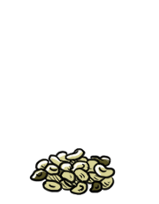

shelled hemp seeds
Hemp seeds are produced from the hemp plant Cannabis sativa L, a hardy plant that thrives in a variety of growing conditions. Hemp seeds contain the perfect balance of essential amino acids for sustaining good health. Cooking hemp seeds destoys their nutritional benefits, it's better to eat them raw or to add them to foods after cooking ref. They are a rich source of protein, zinc and iron.
Hemp belongs to the same family as marijuana, but both are very different. Hemp contains less than 1 percent of the psychoactive drug present in marijuana. The oil in hemp seeds can go rancid quickly, they should be used up quickly.